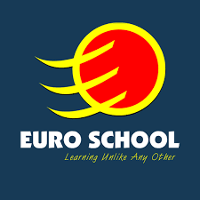

Welcome to Euro School, a balanced modern school dedicated to produce bright minds for future Nepal and the world. In 2007, Euro Kids (Tangal) successfully introduced international standards for preschool education in Nepal, Its success led to the birth of Euro School on 19th April, 2008. The school was shifted to Hadigaun after two years as the number of students increased. In 2017, the school was shifted to New Colony, Hattigauda where better infrastructure is provided. Euro School, one of the premium schools in Nepal, is the venture of Euro Kids (Tangal) and IEC group. At Euro School, we strive to achieve a balance between academics and co-curricular activities, between theoretical and practical learning, between national curriculum and new generation teaching aids and more importantly shaping a child to be a responsible global citizen while retaining the rich Nepali ethos. Our school is a learning center, a laboratory, where students develop ideas and understanding pursuit, passion and dreams and hold themselves and their classmates accountable for shared and individual work.